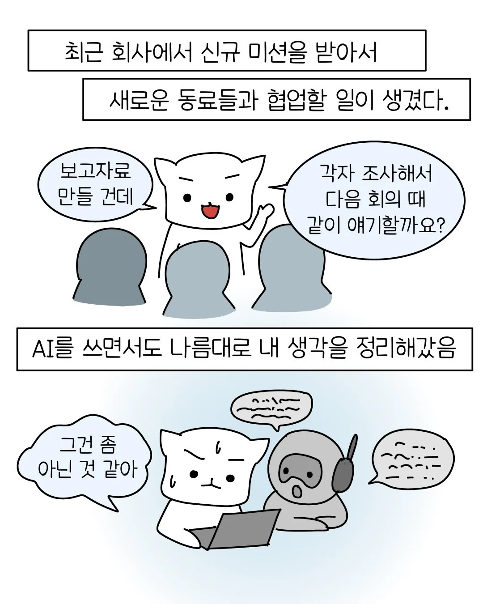
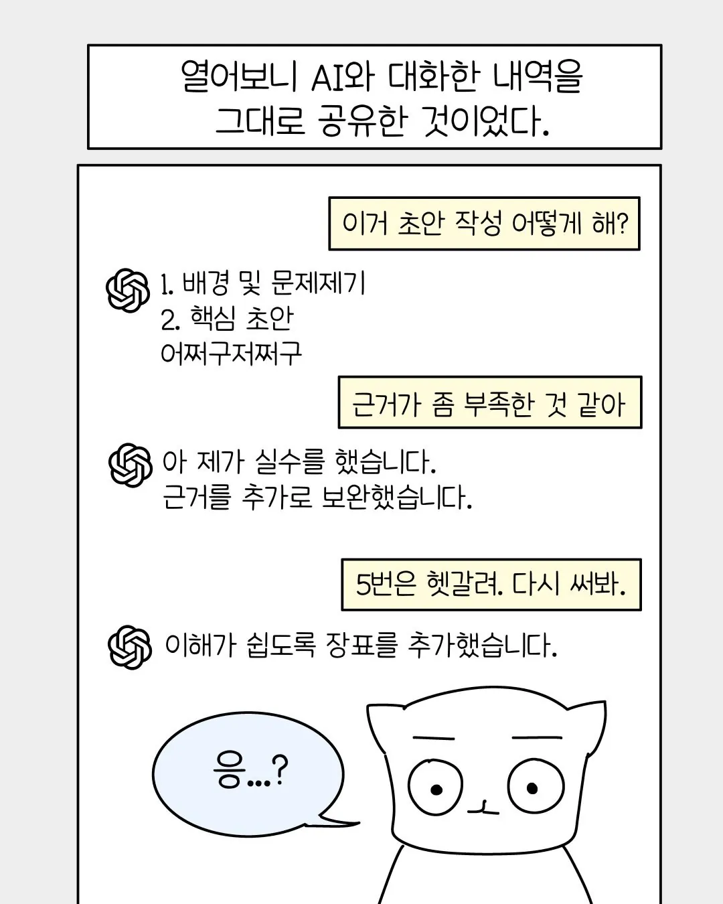
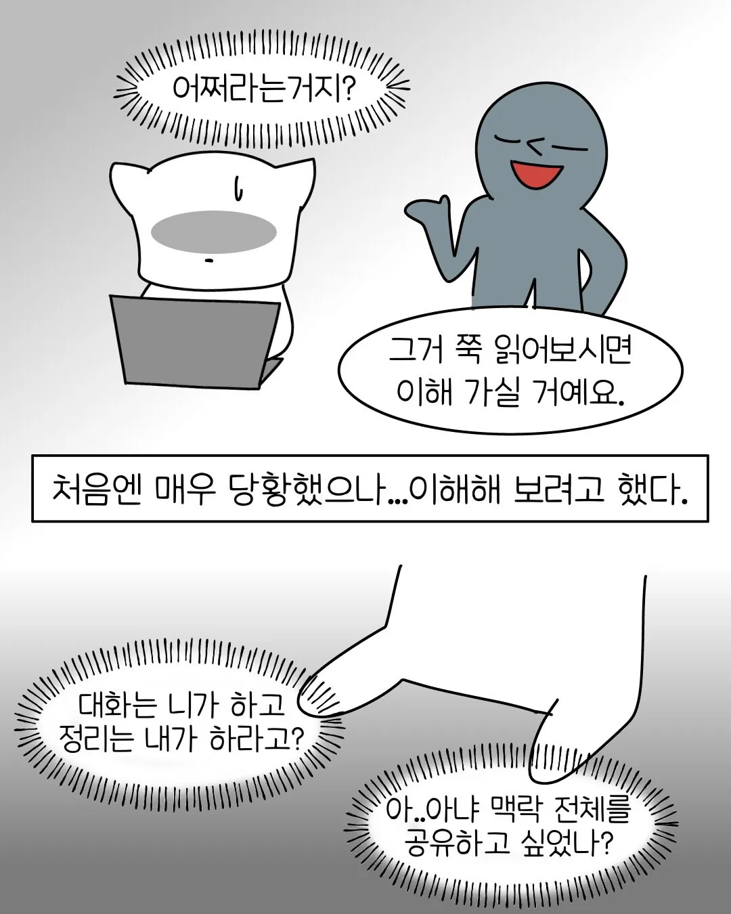
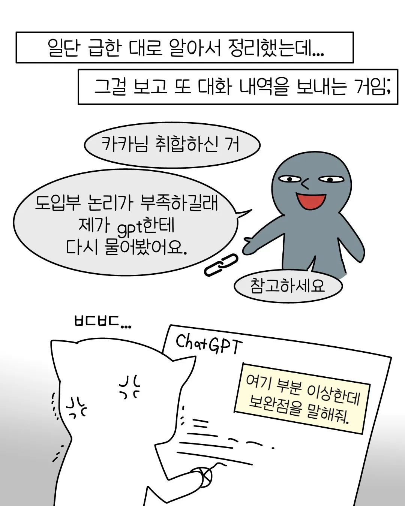
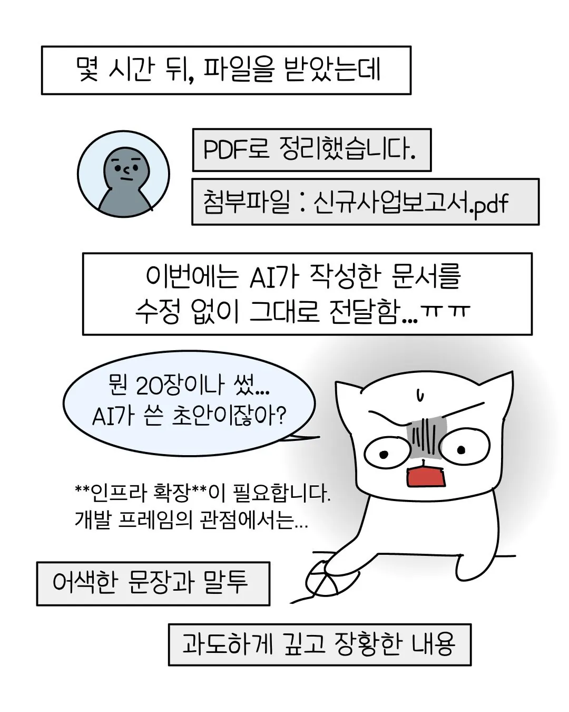
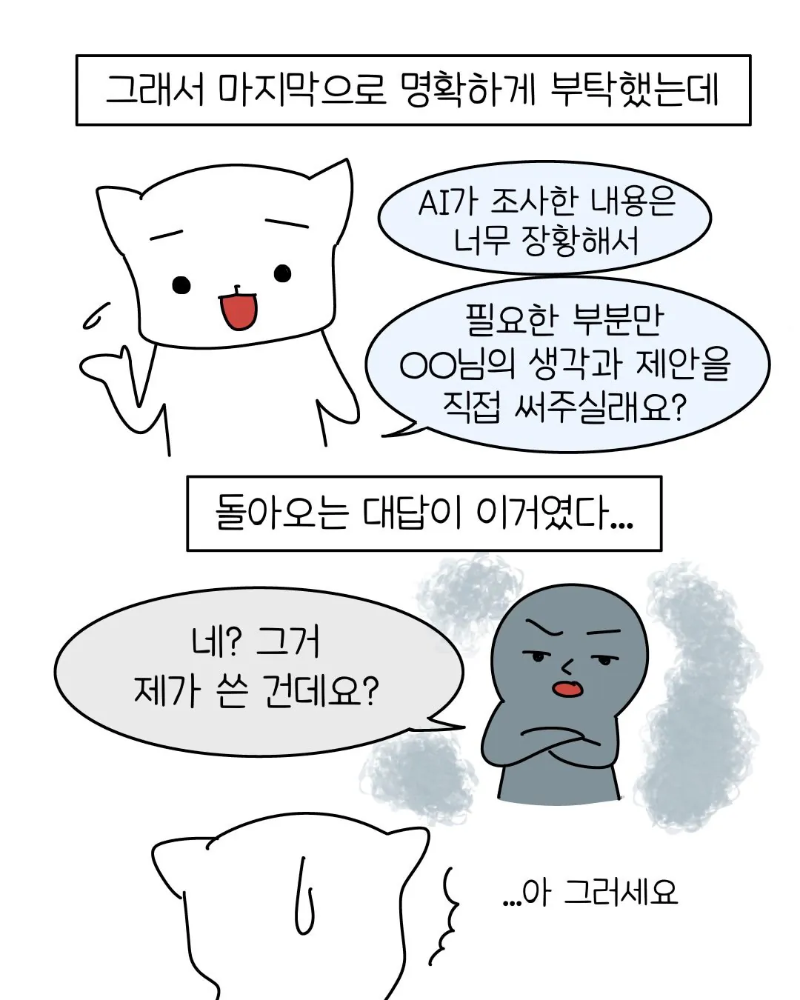
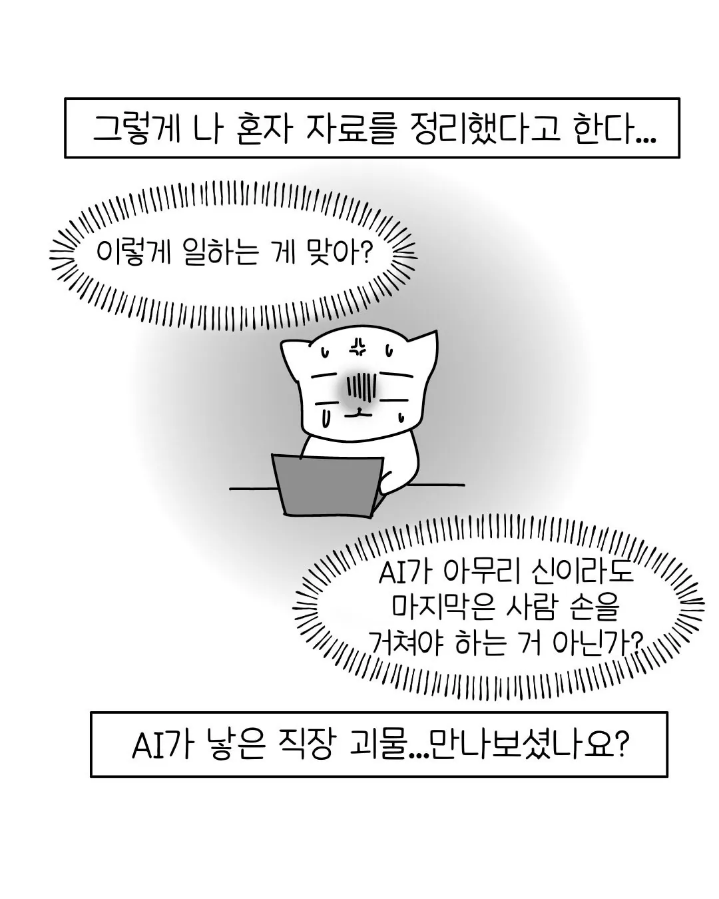

AI에 뇌 의탁하고 그냥 AI 복사 붙여넣기로 모든걸 때우려고 함
그리고 이걸 본인이 작업했다고 착각하고 있음
이럴거면 널 왜 고용하냐고 ㅋㅋㅋ







AI에 뇌 의탁하고 그냥 AI 복사 붙여넣기로 모든걸 때우려고 함
그리고 이걸 본인이 작업했다고 착각하고 있음
이럴거면 널 왜 고용하냐고 ㅋㅋㅋ
ㅋㅋㅋㅋ 늙크크들 팡숀같은 소리하고있네!!!
개발도 만만치않음 그냥 딸깍하고 신경끄고 검수도 안함
아직 저런껀은 다행히 안만나봤는데 ㅋㅋㅋ
아니 피티할꺼리를 저딴식으로 던저주먄 싸우잔 거지 ㅋㅋㅋ
우리 회사 대표가 지피티말만 믿고 분쟁하다가 직무정지 당하고 곧 해임 될 예정ㅋㅋㅋㅋㅋ
혹시 게임회사 인가요?
걍 이제 구글 나무위키 링크에서 AI로 주체가 바뀌었을뿐 항상 저런애들은 있었음 ㅋㅋㅋ
ai 맹신하는 애들은 내가 아주 잘 아는 분야를 ai한테 물어보면 이새끼가 얼마나 개소리를 잘 하는지
그리고 그걸 걸러내려면 얼마나 질문을 잘 해야하는지 알 수 있을거다 ㅋㅋ
단순 수량 체크 하는것도 가끔 틀려서 검증 항상 시키는데 20%는 틀리더라
3년차 직원도 저러더라.. ai가 쓴걸 검수도 안하고 그냥 올려보냄 ㅡㅡ
Ai가 팀장이 되는게 아니고 쓰는 사람이 팀장이 돼야한다고
공무원인데
ai한테 물어본 있지도 않은 구라법이 있는데 왜 안해주냐고 지랄하거나
ai가 된다는데 왜 안되냐는 멍청이들 존나 많아짐
내가 다니는 회사도 귀찮은 일들 ai로 돌려서 하는거 보여주니까 ai 맹신하는 사람들이 몇몇 보임. 결과 나오면 한번 확인 해야된다. 백프로 믿지 마라고 계속 말하는데 그 글을 읽기 싫어하는거 같더라. 한번 찐빠 심하게 내야 정신 차릴거 같음.
저게 돈을 버는 직장에서 일어나는 일이라고? AI를 이용하는 사람을 고용한게 아니고 AI를 고용한 수준인데?
그럼 회사는 왜 쟤를 고용함ㅋㅋㅋㅋ
지금 대학급의 팀프로젝트하면 저런일 많음
협력사에 검토서 내놓으라니까 저딴거 주던데
11장인데 실제 내용은 반페이지도 안됨
저런 사람들 보면 차라리 ai라도 써서 다행이라고 해야하나 아니면 차라리 ai 쓰지 말라고 해야할까 고민됨
그래서 본인이 구두서술 못하면 쓰면 안됨
질문했을때 비슷한 논리나 문장수준의 답변이 안나오면 안됨
멍청하면서 눈치까지 없으니 이건 뭐 … 상병신인가 ai를 쓸거면 제대로 쓰던가